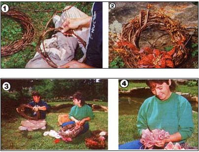

Add rustic splendor to your home year round!
Every year, my husband and I enjoy making wreaths of grapevines gathered from our own backyard arbor . . . to give as gifts, to sell, or just to keep for ourselves. These unique hang anywhere garlands are a cinch to create and can be either left in their natural state or spruced up with ribbon and dried flowers to suit almost any occasion. (I recently finished a small one, garnished with an ivory tinted bow and baby's breath, to give to a friend in celebration of the birth of her first child.) Furthermore, the woven rings are always a big hit at our church's annual Thanksgiving craft fair. In fact, we usually can make enough money from marketing them to cover most of our own holiday expenses. And the ones we don't sell make wonderful Christmas gifts!
Since grapes grow Larne or wild backyards and thickets all across the U.S., there's probably a hefty supply of the raw materials practically at your doorstep, or at least within driving distance. So if you'd like to try your hand at twisting profits and presents out of those spindly cords, here are a few pointers to get you started.
GATHERING GOODS FOR GARLANDS
The main ingredient of a wreath is, of course, the vine itself, and the best time to forage for grapevines is during their dormant season . . . which in most places falls between September and April. And, if you don't have an arbor or access to a vine-draped woods, a friend or neighbor who grows grapes would doubtless be glad to exchange some vines for a little pruning assistance.
Once you've located a harvestable crop of vines, collecting them is a snap! Just use a sharp pair of shears to cut them, and then pull them free. If any dried leaves or fruit are still on the branches, try to remove them as you snatch the canes out . . .being careful to leave as many of the delicately curling tendrils as possible, since it's these tiny "locklets"that'll give your wreath its distinction.
Instead of trying to transport the sprawling mass home, a lot of folks turn the vines into wreaths right where they collect them. However, if you'd rather work in the comfort of your own yard, lay the vines on the ground in manageable bunches as you collect them. Then, when you're through pruning, loosely wrap each bundle-one at a time-around your forearm from your hand to your elbow . . .and tie the pieces together into a portable circle with twine, string, or light wire. This may your harvest lot 22S,, to grow, and haul.
Other than the vines, the only materials you're likely to need for wreath making are odds and ends of ribbons (the silk, rayon, or other fabric types are the most pliable and attractive) . . .dried flowers . . . ornamental birds . . .and anything else that you think will make your creations beguiling.
WREATHERY
Plan to make your garlands as soon as possible after the vines have been gathered . . . before the canes dry out and become hard to work with. If you can't get to the task right away and the canes do get a little brittle, try soaking them in water for a few hours to restore their flexibility.
To begin wreath making, start with a fairly long, stout strand. Then, holding the thicker end in one hand, loop the rest of the vine around in a circle as if you were winding up a garden hose. Make this first ring about the size you wish your finished product to be (ours average approximately 30 inches across).
Next, loop the vine around until you're about midway through a second circle and pull the strand through to the inside of the ring to anchor the wreath together. (Don't think you're hopelessly inept if it takes you several tries to get the circle to hold: This step is tricky for anyone.) When your ring is secured -you may still have to keep it in place with one hand while you continue to work-wrap the vine around the outside and then pull it back through to the inside of the circle in a spiral . . . as if you were wrapping a stiff ribbon around in candy-cane fashion.
Continue spiraling this way until you come to the end of the vine. Now, firmly tuck the loose end into the ody of the wreath Grapevines are stiff enough chat-if you do this right-you shouldn't have to hold the circle together with an unattractive tie of string or wire.
One cane may be all you need to complete your garland, but if you wish to add another, simply tuck a second strand in near the first, and coil it in the same candy-cane style around the wreath . . . then fasten it in as you did the other.
When you're satisfied with your wreath's thickness, embellish it with appropriate decorations to give it a seasonal-or "occasional"flair. We leave many of our wreaths as they are, though, because we feel that a ribbon or even a touch of color would detract from their natural, rustic charm.
A WREATH FOR ALL SEASONS
Once you get the hang of it, you'll find that making grapevine wreaths is no more difficult than winding up your garden hose. It's a lot more fun, though! So go on . . . give it a try. In almost no time, you'll proudly be creating hang-anywhere decorations that can celebrate whatever occasion!
EDITOR'S NOTE: Similar wreaths run ha made from kudzu, bittersweet, wisteria, at hon eysuckle vines. While you're out foraging, you might get some of them to experiment with . . . but take care not to gather poison ivy!
|
[1] Grapevines are easier to shape if used immediately after they are collected. Start your wreath by looping the vines in a circle. [2] The finished garland can be sold, given as a special remembrance, or kept for your own home. [3] The more wreaths you make, the easier you'll find them to create. [4] You can adorn your vines with colorful ribbons and bows (or anything else that strikes your fancy!). |
 |
|